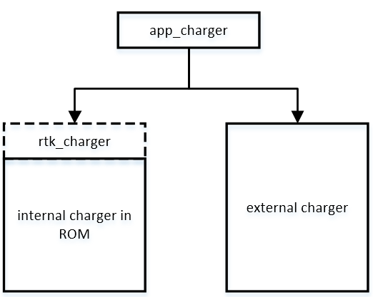
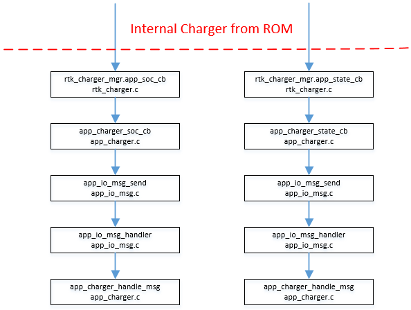
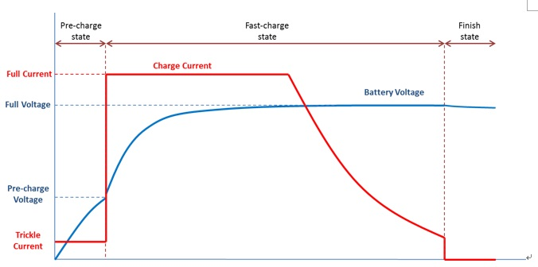
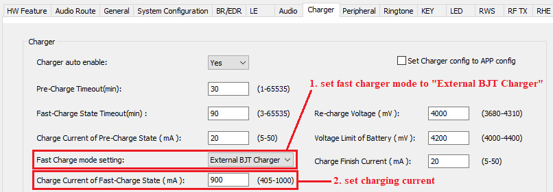

Charger Module User Manual
V1.1
2023/08/01
Revision History
| Version | Date | Description |
| V1.0.0.0 | 2021/10/21 | Stable release |
| V1.1 | 2023/08/01 | Normal update |
Contents
Table List
Figure List
Glossary
| Terms | Definitions |
| SoC | State of Charge |
| CC | Constant Current |
| CV | Constant Voltage |
| OCV | Open Circuit Voltage |
1 Introduction
The whole charger system can be split into two layers.
The upper layer is app_charger(app_charger.c) which reports SoC(State-of-Charge) and charge status to other module in APP layer. It is an abstract wrapper to hide difference between internal charger and external chargers.
The lower layer is the implementation of charger that usually is internal charger, but an external charger is alternative.
There is a rtk_charger.c in APP project as a wrapper for internal charger, because internal charger was placed in ROM. On the other hand, external charger should be implemented in APP project completely.

Figure 1-1 Charger System Architecture
2 How to Interface with app_charger
Internal charger from RTK is useful but external one is also optional. As described above, if you want to use external charger, you should interface with app_charger after finishing the driver of external charger. As to internal charger, RTK SDK have done it in rtk_charger.c.
If you want the internal charger, you should set RTK_CHARGER_ENABLE to 1, and vice versa. All app_charger will switch between external and internal APIs as the code below.
{
#if RTK_CHARGER_ENABLE
app_charger_state = app_charger_state_convert(rtk_charger_state);
#endif
return app_charger_state;
}
{
uint8_t soc = 0;
#if RTK_CHARGER_ENABLE
soc = rtk_charger_get_soc();
#endif
return soc;
}
Generally, the major task for internal or external charger interfacing is to provide SoC and charge status to app_charger both by call and callbacks.
By call, you should add your charger API in app_charger_get_charge_state and app_charger_get_soc. The content of these function is displayed as code as above.
By callbacks, you should register callbacks to your own charger module(external charger). These callbacks finally send SoC and charge status in messages by app_io_msg_send. These messages will be handled in app_charger_handle_msg. Then app_charger is responsible for reporting information to other APP module. You can follow the flow of internal charger(rtk charger).

Figure 2-1 Internal Charger's Callback Flow as an Example
Note:
- APP layer smoothly supports state of charge report during battery discharge. It will process state of charge reported by internal charger and calculate the average. Also, if state of charge drops greater than 3% in one time, APP charger will ignore this report to avoid unexpected noise. This feature can be disabled by turning off the macro "F_APP_SMOOTH_BAT_REPORT" in "app_flags.h".
- APP layer supports battery report de-bounce. State of charge will be filtered by APP layer, so it can only drop in discharger mode and rise in charger mode.
3 Internal Charger
3.1 Principle of Internal Charger
Constant-current Constant-voltage (CC/CV) controlles the charge system.
Considering the safety and efficiency of Li-Ion battery charging, the charging process is divided into three stages.

Figure 3-1 Charger Curve
Pre-charge Stage
Before the battery voltage reaches the Pre-charge Voltage, the maximum (trickle) current can only be 1/10 (typically) of the general charge (CC). The excessive current will be converted into heat, which hasten the death of batteries.
Fast-charge Stage
When the battery voltage exceeds the Pre-charge voltage then allowed enter the fast charging stage. In this stage, charging current should be limited (CC) and the charging voltage should be limited to the termination voltage (CV). In the early stage of fast charging, the charging rate will be bounding by the current limit. When the battery voltage is nearly to the full voltage, the charging current will gradually decrease, and the charging rate will be bounding by the limit voltage.
Finish Stage
When the charging current is lower than the end current, it means that the battery is fully charged. Set the current upper limit to 0 to end the charging
3.2 Charger Configured by McuConfigTool
Internal charger is configured by McuConfigTool. You can take a reference to "MCUConfig Tool User Guide.docx" within McuConfigTool.
Note:
- If the option "Disable Charger after charging finish 1 min" is on, charger will be disabled after entering finish state for 1 minute. This option is used to save power for charging box. If adapter in is detected, charger will be enabled again automatically. So this option is preferred to set in power down mode instead of DLPS mode.
- If NTC is powered by PAD and uses Realtek's recommended hardware circuit for charger temperature detection, PAD rises slowly because of the capacitance on the hardware circuit, requiring a delay after pulling up PAD, using platform_delay_ms for a 6 ms delay, or os_delay for a 20 ms delay.
- The input voltage range of the charger temperature detection pin is 0V ~ 0.9V.
3.2.1 External BJT Charging
The external BJT could be enabled for larger current charging for RTL8763D, and the charging current is supported up to 405mA to 1000mA. The configuration in McuConfigTool is shown in Figure 4.
Note, the higher charging current leads to a higher voltage division in the internal resistance of the battery. And the voltage value get by API charger_utils_get_batt_volt is the OCV(open-circuit voltage) of the battery.
- when charging, OCV = vbat - i_charge * bettery_resistance
- when discharging, OCV = vbat + i_discharge * battery_resitance
Therefore, the voltage value measured at the VBAT terminal is different from the value get by API charger_utils_get_batt_volt. To confirm the actual OCV when charging, users could measure the battery voltage separately when cutting off the charging line.

Figure 3-2 High Current Charging Configuration
3.3 Internal Charger APIs from ROM
Internal Charger source code is implemented in ROM. APIs' declarations are in charger_api.h.
- charger_api_reg_state_of_charge_callback()
Register the user-defined callback function, which will be called by charger module when the state of charge(SOC, which is a term for charge, https://en.wikipedia.org/wiki/State_of_charge) changes. State of charge represents the quantity of electricity. User could append the APP code according to your demand.
- charger_api_unreg_state_of_charge_callback()
Unregister the user-defined STATE_OF_CHARGE_CALLBACK callback function.
- charger_api_reg_charger_state_callback()
Register the user-defined callback function, which will be called by charger moudule when the charger module state (it is different from SOC mentioned above) changes.
- charger_api_unreg_charger_state_callback()
Unregister the user-defined CHARGER_STATE_CALLBACK callback function.
- charger_api_enable_charger()
Enable charger module manually. IC's rom code calls it when USB adapter pluged.
Note: it will cause soft reset of charger module and force discharger module to be disabled if discharger module is running.
- charger_api_disable_charger()
Disable charger module manually. IC's rom code calls it when USB adapter unpluged.
- charger_api_enable_discharger()
Enable discharger module manually. IC's rom code calls it when USB adapter unpluged.
Note: it will cause soft reset of discharger module and force charger module to be disabled if charger module is running.
- charger_api_disable_discharger()
Disable discharger module manually. IC's rom code calls it when USB adapter pluged.
- charger_api_set_adapter_current()
Set maximum current of adapter.
Note: it will trigger soft reset of charger module.
- charger_api_set_full_current()
Set full charge current, the alias is general current (CC).
Note: it will trigger soft reset of charger module.
- charger_api_get_state_of_charge()
Get state of charge(SOC). If charger is in CHARGER_MODULE or DISCHARGER_MODULE, the fucntion would return a uint8_t value (0~100). The return value means battery's quentity of electricity (0%~100%).
Note: it would return 255 when charger is in NO_ACTIVE_MODULE.
- charger_api_get_charger_state()
Get the charger module state. The function would return the ChargerState_t type data.
- charger_api_get_error_code()
Get the error code of charger module. There are 11 error cases described as ChargerErrorCode_t.
3.4 Internal Charger APIs from charger_utils
- charger_utils_get_batt_volt()
Get the voltage of battery.
- charger_utils_get_batt_curr()
Get the current of battery.
- charger_utils_get_batt_temp()
Get the temperature of battery.
- charger_utils_get_adapter_volt()
Get the voltage of adapter.